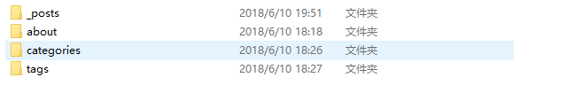
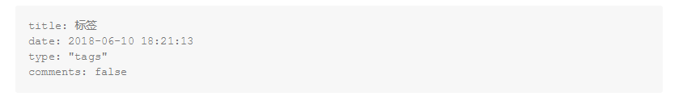
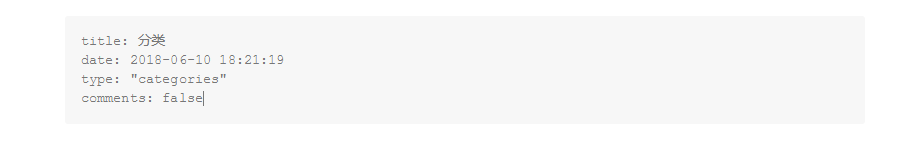
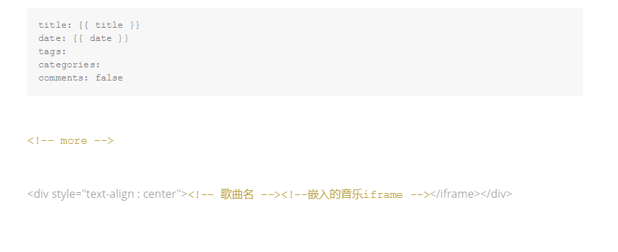

hexo小结
总结一下hexo常用的指令以及在使用博客时遇到的一些问题。
这个博客是由hexo3+github pages 。当然主题不同，有些许情况也不太一样，具体问题具体分析嘛。文章需要使用markdown语法进行编写，最后才渲染成网页。
常用hexo指令
hexo init # 初始化一个博客
hexo new page #用于新建页面，比如tags页
hexo n '文章名' #新建文章 支持更复杂的可选操作（标签 分类 模版选择）
hexo clean #清除缓存，一般不需要，除非你发现你的更改不生效
hexo g #生成
hexo s #启动本地服务预览默认4000 如果想指定端口号 请这样 hexo s -p 5000
hexo d #部署
站点配置文件
在hexo 配置文件中，每个冒号后面要有一个空格。当然在每篇文章的顶部的那些信息，分号后面也要有一个空格
站点配置及个性化 ： 没有过多的个性化，只是修改了一些名称而已，根目录下_config.yml
# Site
title:
subtitle:
description:
keywords:
author:
language: zh-Hans
timezone: Asia/Shanghai
## Themes: https://hexo.io/themes/
#其实就是theme下的主题的文件夹名
theme: next
#新建文章的时候会生成一个文件夹
post_asset_folder: true
# Deployment
## Docs: http://hexo.io/docs/deployment.html
deploy:
type: git
repository: git@............
branch: master主题配置文件
使用的是next主题，就只改了这些，其他的参照next官网上的说明，进行更改就好
menu:
home: / || home
about: /about/ || user
tags: /tags/ || tags
categories: /categories/ || th
archives: /archives/ || archive
# Schemes
scheme: Mist
# Sidebar Avatar
avatar: /images/avatar.png
# Code Highlight theme
highlight_theme: night遇到的一些问题
标签页、分类页和关于页的建立 : tags 、about和 categories 是要自己建立的， 不然点击的时候会返回错误。
hexo new page about
hexo new page tags
hexo new page categories会在主题的站点目录的source下生成对应的文件夹，更改对应的index.md文件内容



comments: ** 是指页面的是否可以评论（如果有评论插件并且打开了）。about**里面的index.md 只需往里面填充内容，介绍一下就好。
文章部署：使用github，需要添加插件。
npm install hexo-deployer-git –save
同时在_config.yml (不是主题的配置文件，是根目录下的)中进行修改
*文章摘要 * : 写完一篇，预览的时候，发现每一篇文章都是完全显示的。于是搜索了一下，发现一个最简单的方法 就是在文章需要隔断的地方添加一条注释。
文章摘要
<!-- more -->
文章剩余部分后来我觉得每次在文章中打上这么一句话，太麻烦了。所以在 站点目录下找到scaffolds/post.md 添加进去了。顺便把格式稍微调整了一下,成这样了。后面就没怎么整了，简洁就好。

如果使用next主题，在主题配置文件中有这么一段， 把false改成true也能达到 阅读更多 的效果
# Automatically Excerpt. Not recommend.
# Please use <!-- more --> in the post to control excerpt accurately.
auto_excerpt:
enable: true
length: 150插入歌曲： 为了图省事， 直接在文章后面插入网易云的外链。外链生成，在网易云音乐的网页版有，有些是有版权问题的（*_*） ，无法生成外链。
图片问题： 由于没有去购买图床（好吧，穷）， 所以还是把图片连带上传到github上了。图片我都会使用压缩工具先进行压缩。这是一个很好的在线压缩网站: Tinypng
先把根目录下的 _config.yml 的 post_asset_folder 设置为 true ， 这样每次写新文章的时候 ，会在 source/_posts文件下生成一个 **.md 和 ** 文件夹 。
然后，安装图片插件 ，使用下面命令，或者去搜其他的插件。
npm install https://github.com/CodeFalling/hexo-asset-image --save 在文章中引用的时候，直接写相对路径，就ok了。
每次部署前可现在本地预览， 还有就是每次部署之后，可能会有时间差或者缓存问题，换句话说，并不能马上看到新的文章，请等待
多标签： 支持多标签的 ，标签没有层级的概念，而分类有
[tag1, tag2, tag3] # 使用中括号，并且英文分号隔开
# 或者参照hexo 官网上的写法
tags :
-tag1
-tag2层级分类 : 想在一个大分类下，建立一些小分类，可以这样。
[categories1, categories2, categories3] # 使用中括号，并且英文分号隔开
# 或参照hexo官网的写法